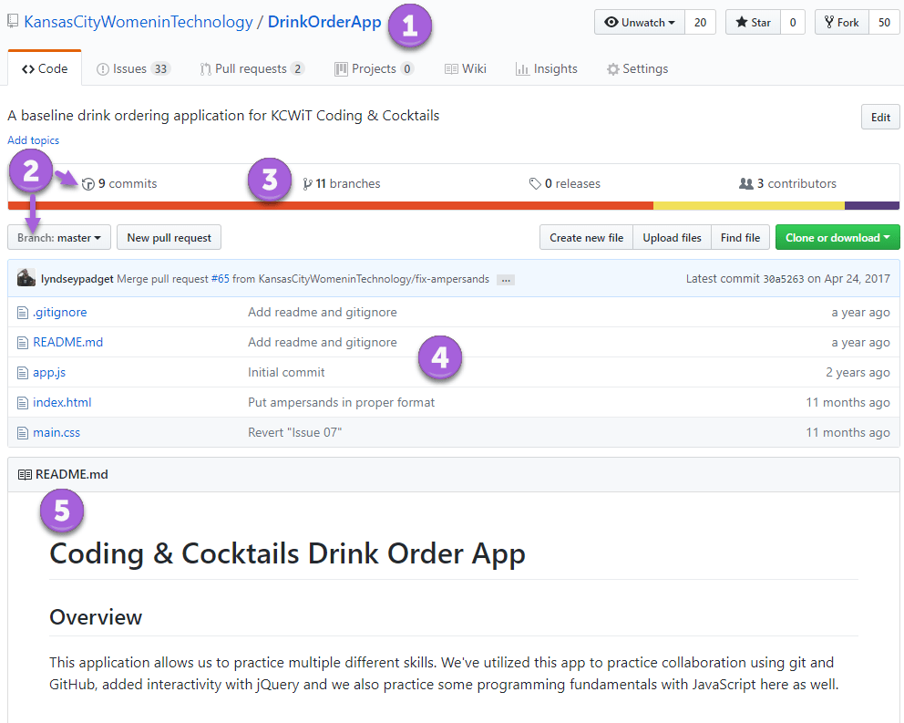
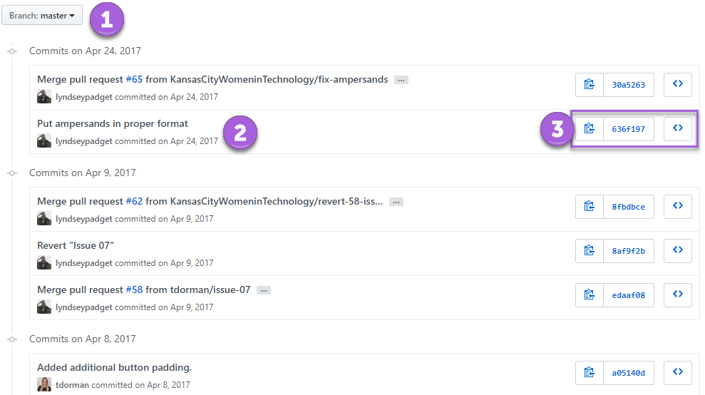
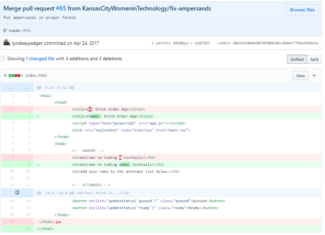
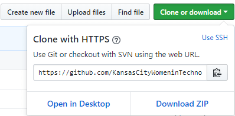
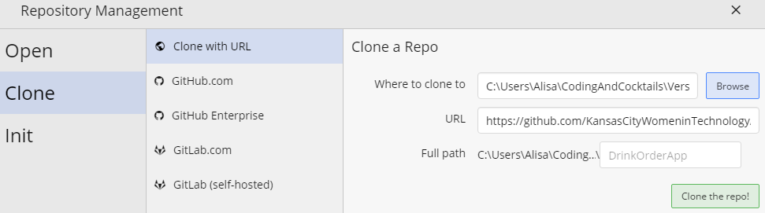
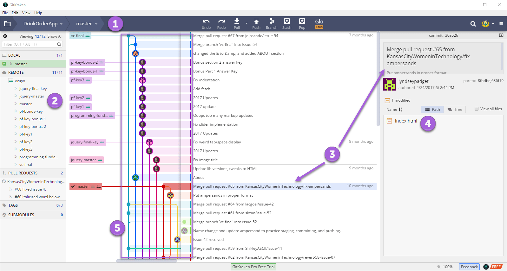
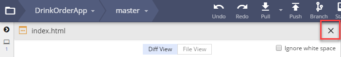
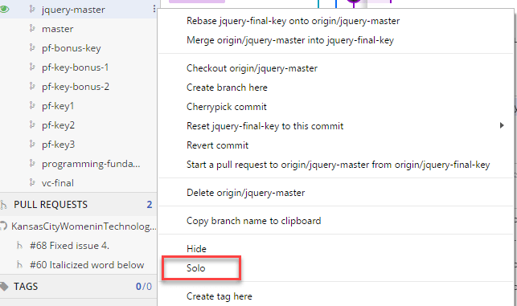

GitHub & Inspecting a Repository
Being able to keep track of changes in your source code is necessary. Having version control allows us to see differences in each revision of the code and to be able to attribute changes to an author. In this section, we'll take our first steps into version control using GitHub.
This section will help guide you through the following steps:
Explore a repository in GitHub
We will take a quick tour of GitHub and cover the UI we will use for tonight's session work. You don't need to see your terminal and file explorer at the same time for this section of the worksheet. You can close the file explorer.
Open Chrome and navigate to https://github.com. Sign in if you aren't already signed in to GitHub.
Let's find a repository. Search for "KansasCityWomeninTechnology/DrinkOrderApp" using Search GitHub in the toolbar at the top of the page. Click on the repository result.
GitHub is a big place! Sometimes there are many repositories with the same name. In this search we are searching repositories named "DrinkOrderApp" by the user "KansasCityWomeninTechnology".
We see an overview for a repository. Let's inspect a little closer. GitHub displays information about the repository such as
1 Owner and repository name
2 The selected branch and the number of changes (aka commits) made in that branch
3 The number of branches in the repository
4 List of files for the selected branch and when the files were last modified
5 Read me text that the author creates to provide information about the source code

Click on commits (circle #2) to see the list of commits for the branch. Now we see more details about each commit such as
1 The selected branch
2 The author, date, and author's message about the changes
3 Further actions you can take on a commit

Let's dive a little deeper and focus on circle #3. There's 3 actions you can take. Click on the middle button (the one with letters and numbers) on the first commit.
It might look like random letters and numbers, but it's not! This is the unique identifier to the commit.
You now see the differences between the previous version and this commit.

The pink highlights show the previous version and the light green highlights are the new version. The darker red highlights shows the deleted characters and the dark green highlights show the added characters.
This is more commonly known by its abbreviated name, "diff view".
Click the button in Chrome to navigate back to the list of commits.
In the further actions you can take on a commit (circle #3), click on the button to the right (the one that looks like ). Now you are browsing the repository files as they were in this commit. You have a snapshot of the entire repository on every commit!
Click the name of the repository "DrinkOrderApp" at the top of the page to navigate back to the main repository page.
Clone a repository
Let's look at the same repository using a Git GUI tool called GitKraken. We'll clone the repository to our machines and see a unified visualization of the separate branches and commits we inspected earlier.
In Chrome, on the main overview page for "DrinkOrderApp" repository, click on the green Clone or download button and click the button to copy the link to the repository.

Open GitKraken. Clone a repository in GitKraken by selecting File Clone Repo.
In the Repository Management dialog that displays, select Clone with URL. Click on Browse. Navigate to and select the "CodingAndCocktails/session3" folder to populate the Where to clone to field.

Windows users - Navigate to your home directory by typing
%USERPROFILE%in the file explorer navigation bar.Paste the link to the repository in the URL field. GitKraken will display the a Full path field. Notice it automatically adds the name of the repository to the path. Click Clone the repo!.
When the banner with the text "Successfully cloned repo 'DrinkOrderApp'" displays, click on Open Now.
When the repository opens, notice it looks almost like what we saw in GitHub with a lot of the same information. We see
1 Repository name and selected branch
2 A list of all branches in the repository
3 A commit for a branch along with author, message, modified date, and unique identifier
4 List of files modified
5 The paths for all the branches as an unified view (aka a graph and "Git tree")

Take a look at the list branches available in the repository (circle #2). Click on a different branch in the list, such as the one named "jquery-master". Notice a different commit highlights and the commit information on the right (circle #3) changes. Feel free to click on different branches (you can't break anything).
Right click shows more options. We won't cover using them in GitKraken but you'll use some of the concepts later in the session.
Select a file from the list of files modified (circle #4). The main view changes to show the "diff view" like we saw in GitHub. Click on the "X" at the top of the main view above the checkbox for Ignore white space to return to the graph view.

Double click on a branch, such as the one named "jquery-master". Notice your selected branch changed (circle #1). You may have also noticed a message appear and disappear. You switched branches and the LOCAL list of branches on the list now contains "jquery-master". We'll cover more about this a little later tonight.
Now let's turn our attention towards the Git tree. This shows all the branches in an unified view and how each path converges and diverges. Each branch is a different color. Circles with pictures and solid circles represent different commits.
It looks like a maze, but using this view we can trace revisions and see how a change affects the project as a whole. The ability to create branches in version control allows large groups of people can work independently and still collaborate on a single project.
Right click on "jquery-master" in the left panel with the list of all the branches. Select Solo as shown in the picture below.

The tree view zooms in and only displays the "jquery-master" branch. Select Solo again to revert to the tree view.
Targeting one branch in a view makes identifying changes easier. This is the same view we had in GitHub when we saw all the commits for the selected branch.
In your terminal, navigate to "CodingAndCocktails/session3" directory and list the files to see your new repo. Notice GitKraken created a folder with the same name as the repository you cloned, "DrinkOrderApp".
Need a little help? Expand this section for guidance.
Use thepwdcommand to determine which folder you are in. Change directories using thecdcommand. Remember you can move up a directory usingcd ... Then use thelscommand to list out the files and folders.